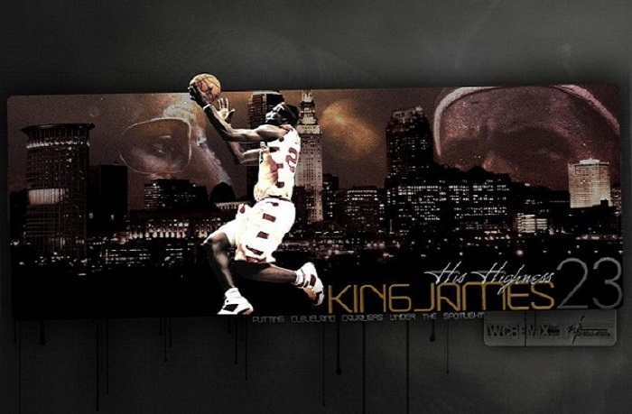

The Hero In NBA
詹姆斯在2003年6月26日的NBA选秀会上以第一轮第一顺位被克利夫兰骑士选中。 2003年10月29日，生涯的第一场比赛面对萨克拉门托国王，取得25分、6篮板、9助攻及60%的投篮命中率（20投12中）
2005年1月19日，对决波特兰开拓者队，全场攻下27分、11篮板、10助攻，完成个人职业生涯的第一次“三双”。 2005年2月20日，詹姆斯生涯首次入选为NBA明星队赛东部首发球员，缴出13分、8篮板、6助攻，最后东部明星队以125-115击败西部明星队
2006年2月19日，詹姆斯再次入选明星队赛东部首发，送出29分、6篮板、2助攻的表现，协助东部明星队以122-120击败西部明星队，赛后詹姆斯获选为明星赛MVP，以21岁51天成为史上最年轻的明星赛最有价值球员
2007年2月18日，詹姆斯连续第三年获选为明星赛东部首发前锋，他取得28分、6个篮板及6次助攻，但最后东部以132比153不敌西部。 赛后马刺大前锋Tim Duncan给予詹姆斯极大的赞赏，宣称"未来是你的"。
2008年，詹姆斯连续4年入选东部明星队，在NBA明星赛上阵。他成为比赛中的最有价值球员，以27分、8个篮板、9个助攻、2个抢断及2个盖帽协助东部;以134-128击败西部
詹姆斯成为常规赛最有价值球员，是骑士队历来夺得此荣誉的最年轻球员。亦首次进入NBA防守一队。在季后赛，带领骑士队以不败的姿态击退底特律活塞及亚特兰大老鹰率先晋身东部决赛，对手是奥兰多魔术，但是第一场比赛就遭到魔术顽强反击，希达耶特·特科格鲁最后关头命中关键球，随后助攻刘易斯确立领先。此役更被特科格鲁拿下15分14次助攻。第二场比赛，魔术与骑士战斗到最后关头，特科格鲁突破后左侧跳投命中；詹姆斯在最后1秒面对特科格鲁起手射进一球三分球，以96-95反胜。但是最后在第六场比赛以总场数2-4败于魔术。
詹姆斯连续六次参加NBA明星赛，更连续三年取得250万票。
2010年7月8日，詹姆斯透过ESPN举办的全国直播特别节目“The Decision”宣布与热火队签约，将与德怀恩·韦德和克里斯·波什组成热火三巨头。
詹姆斯第七次入选明星赛，砍下29分、12个篮板和10次助攻，成为继迈克尔乔丹之后，在明星队赛上第2个拿到三双的球员。詹姆斯替热火首场上阵赛事面对波士顿塞尔蒂克，虽然他独自得到31分，但在两名主力波什及韦德失准的状况下，以80-88的结果负于对手。12月18日对纽约尼克斯的比赛中取得32分、11个篮板及10次助攻取得当季第二个三双
詹姆斯第八次入选明星赛，和西部凯文·杜兰特同时得到全场的最高分36分以及6个篮板和7次助攻。詹姆斯至今8场明星赛共得207分，平均25.9分史上最高。
2013年1月16日，对战金州勇士队，全场取得25分、10次助攻，达成生涯得分两万分加五千次助攻，取代科比·布莱恩特（29岁122天），成为NBA史上最年轻的两万分球员（28岁又17天）。
詹姆斯率领球队以东部第二种子晋级季后赛，以4-0和4-1接连击败山猫和篮网，连续四年晋级东部决赛。东部决赛以4-2击败步行者，连续4年赢得东部冠军更闯进总决赛。但总冠军赛热火，第二场克里斯。波什关键时刻投进致胜一球，是唯一赢下的一场，以1-4输给马刺。詹姆斯这时候不经怀疑，"未来真的是我的吗?"，季后詹姆斯又做出重大"决定"。
2014年7月11日，跳出合同成为自由球员。詹姆斯向球迷写感性文章检讨自己的错误，鲑鱼返乡正式宣布将回到职业生涯的起点克利夫兰骑士。与克利夫兰骑士签下2年4221.7万美元合同，第二年为球员选择权。
2015-16年总冠军赛，骑士再度碰上勇士，却在前四场陷入1:3落后。2015-16年总冠军赛GAME5，骑士于勇士主场守住关键一胜，第五战中勒布朗·詹姆斯和凯里·欧文成为史上第一队同队成员在总冠军赛砍下超过40+分(两者都有41分)的两位球员。欧文也成为继“上古神兽”威尔特·张伯伦之后，首位也是唯一一位在NBA总决赛上攻入40分或以上，同时有超过70%的命中率的球员（24投17中，命中率70.8%）。抢七大战中骑士以93:89战胜勇士夺得总冠军，这是骑士队史第一次夺得总冠军，而骑士在总决赛大比分1:3落后下连胜三场夺得冠军，亦为NBA历史首次冠军战1-3落后情况下逆转。勒布朗·詹姆斯凭著七场总冠军赛的统治级表现，逆转击败史上单季73*胜场数最高的金州勇士队，拿下个人第3个总决赛MVP（全票通过夺得FMVP，七场系列赛砍下208分、79篮板、62助攻、18抢断、16火锅，在这五项主要数据里皆为两队球员中第一，为历史记录）。
克利夫兰骑士11日主场迎战夏洛特黄蜂，简直就是“小皇帝”LeBron James的纪录夜，他全场狂轰本季新高44分，116：105抢下4连胜。James今天效率极高，24次出手进17球，包括5发外线，攻下44分、9篮板、10助攻、3抢断，又是一次的“小三元”。这是James生涯第9次单场至少“40分、10助攻”，追平“篮球之神”Michael Jordan，并列史上第5。
“Every night on the court I give my all, and if I’m not giving 100 percent, I criticize myself.”
— LeBron James, NBA Player
code by Wei Wang.
at 12-11-2016